Designing for live sports.
People follow matches as animated games on their phones. For the past year I've designed what they see, and built a lot of it myself. Here are three projects, from a shipped feature to an early idea.
Some details are left out because this is internal work. Some player names in screenshots are blurred.
- 01Bet trackingShippedShowing people how their bets are doing, right on top of the live game. Now part of our design system.
- 02Halftime with oddsProposalTurning the 15-minute break into a quick recap and a ready-made bet. Nine ideas down to one.
- 03Football, from flat to 2.5DIn the demoTurning a flat pitch with dots into a tilted match you can still read on a phone.
Each chapter starts with the short version. Open "See how it got there" for the full process.
Bet tracking: from loud to calm
You have three bets on a game. The match view showed the game, but not your bets. I designed little chips that fill up as each bet gets closer to winning, and built them into the product.
Your bets lived somewhere else. To check them you had to leave the game.
One chip per bet along the bottom, with a ring that fills up. Tap it for the details and cash-out.
Live in our demos for basketball and football, and now part of our design system so every product can use it.
See how it got there
-
01
The first version worked, but shouted
Every bet was a solid red or green bar. Three losing bets made a red wall that told you nothing.
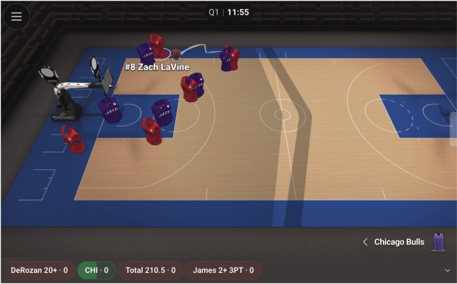
-
02
Then I tried a ticker
Once I saw it live, everything was orange and fighting for attention. New rule: if nothing is changing, stay quiet.
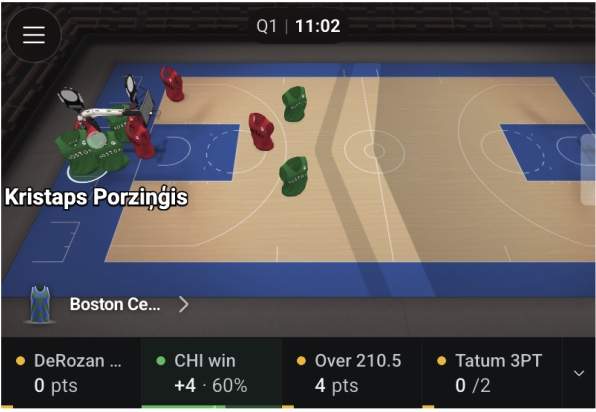
-
03
Summer: chips with little rings
Calm by default, clear when something happens. Tap a chip for the stake, the odds and what you'd win.
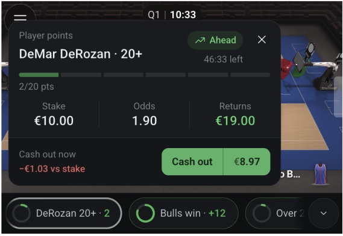
-
04
Cashing out, without the drama
The big warning box grew the card at the exact moment you had to decide. Two simple buttons replaced it.
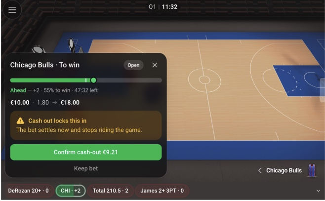
Before 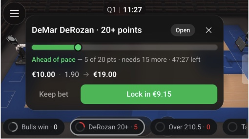
After -
05
Autumn: one colour rule for every bet
I redesigned the cards. Green means ahead or won, grey means still open, red only when a bet is lost. A red bar "35% full" didn't mean anything, so it went.
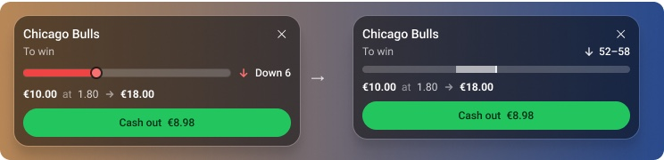
-
06
21 kinds of bets, 5 card styles
Instead of a new card for every bet type, every bet fits one of five styles: a filling bar, a few small bars, a bar from the centre, a race, or no bar at all.
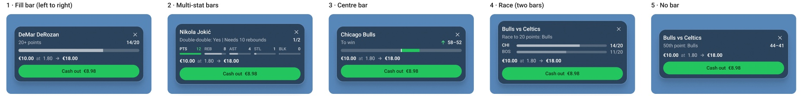
-
07
Make the score stand out
The live number is what you look for, so it's bold and the target steps back. The same chips, notices and cards now live in our design system, ready for every product.
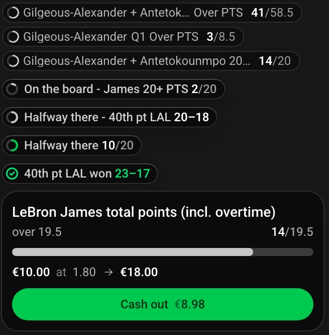
-
08
Today, in the live demo
The same card and chips running over a live basketball game: your bet, how far it has to go, and cash-out, without leaving the match.

What I learnedBuilding it in the real product meant I could watch it move over a live game. Almost every decision came from seeing the previous version not quite work.
Halftime: nine ideas down to one
Halftime is 15 minutes where nothing happens on the pitch. The old screen showed tables of stats. I designed one where the pitch tells the story of the first half, and a few facts turn into a ready-made bet.
At halftime people had a page of numbers and nothing to do with them.
A halftime screen that shows where the game happened, plus ready-made combined bets.
A clear proposal, now being reviewed with the product team.
See how it got there
-
01
Where it started
The old halftime screen: a heat map, a shot map and a player comparison, each on its own tab. Good numbers, but nothing to do with them.
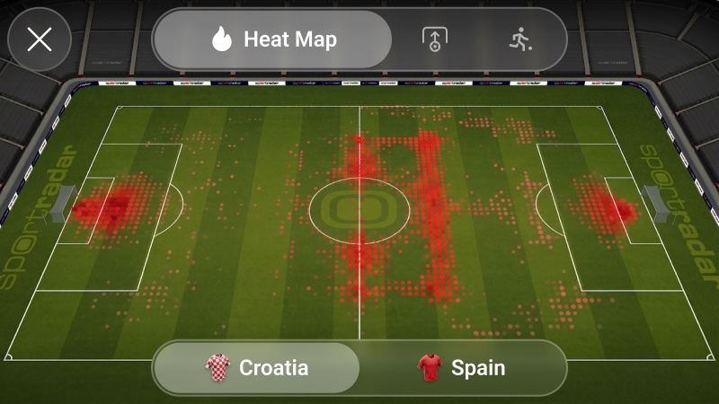
-
02
Find out what people want
Bookmakers push combined bets, and people trust a strong first half too much. So every fact also shows the other side.
-
03
Go wide, then pick one
Nine very different ideas first. Side by side, the strongest was clear: let the pitch tell the story. This was the first full version of it, at three phone sizes.
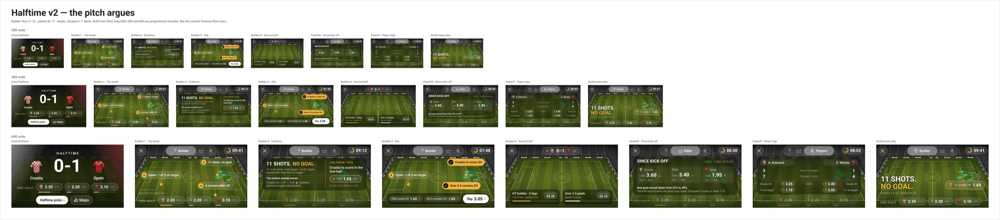
-
04
Remove what the app already does
A recording of the real app showed half my screen repeated things one tap away. Out they went: halftime became a moment inside the app, not a screen of its own.
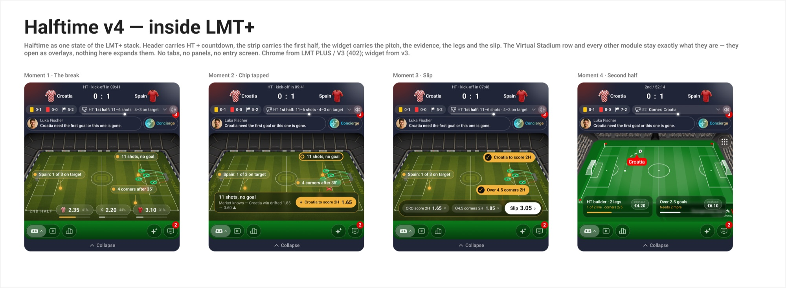
-
05
Let the pitch do the talking
Where each team played and where the shots came from, with ready-made combined bets underneath. The odds sit one tab away.
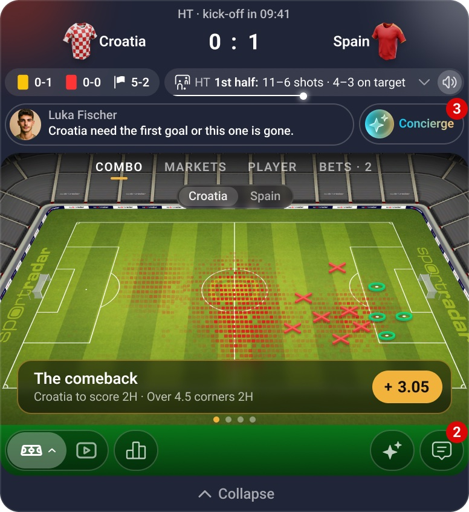
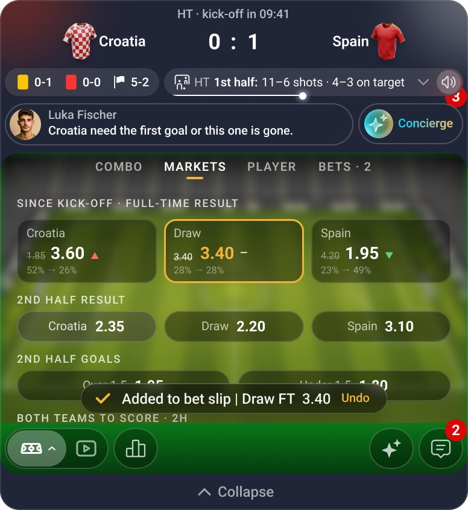
What I learnedThe best changes were removals. Each round of feedback made the screen smaller and clearer.
Football, from flat to 2.5D
Our match tracker showed football as a flat pitch with dots. I designed a tilted 2.5D version where players are little shirts, so it feels closer to watching the game, and it still reads on a small phone.
A flat pitch with dots is clear, but it looks like a diagram, not a match. And once you tilt it, players overlap and get hard to follow.
A tilted pitch inside a stadium, players as shirts in team colours, the player on the ball bigger, and every match moment drawn out.
Handed over to developers and running in our demo. The flat version stays as a lighter option.
See how it got there
-
01
Start from the flat pitch
Top-down, with a dot for each player. Easy to read, but it doesn't feel like football.
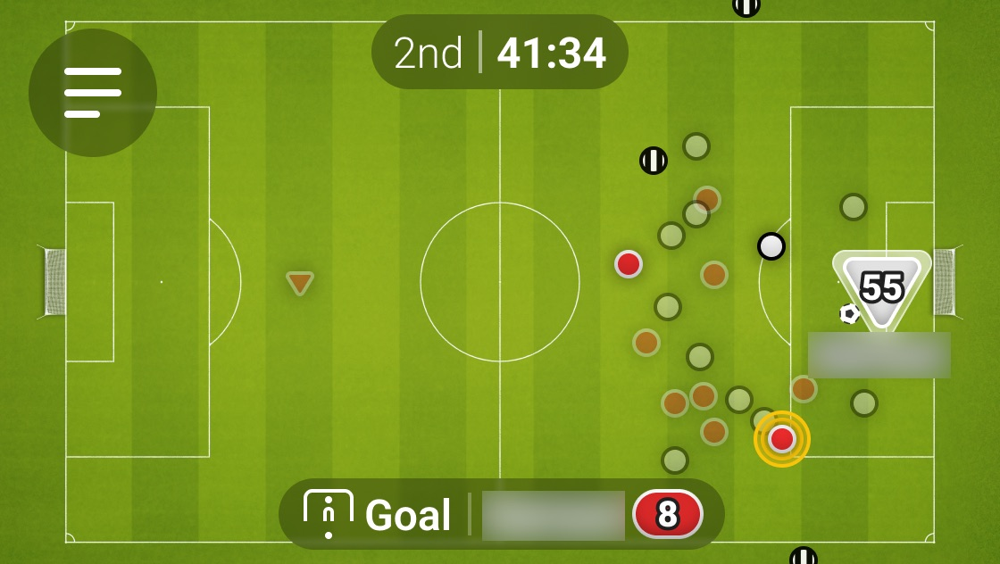
-
02
Tilt it
The same pitch in perspective, with a stadium around it. Every flow came along: possession, free kicks, goals and the timeout screen.
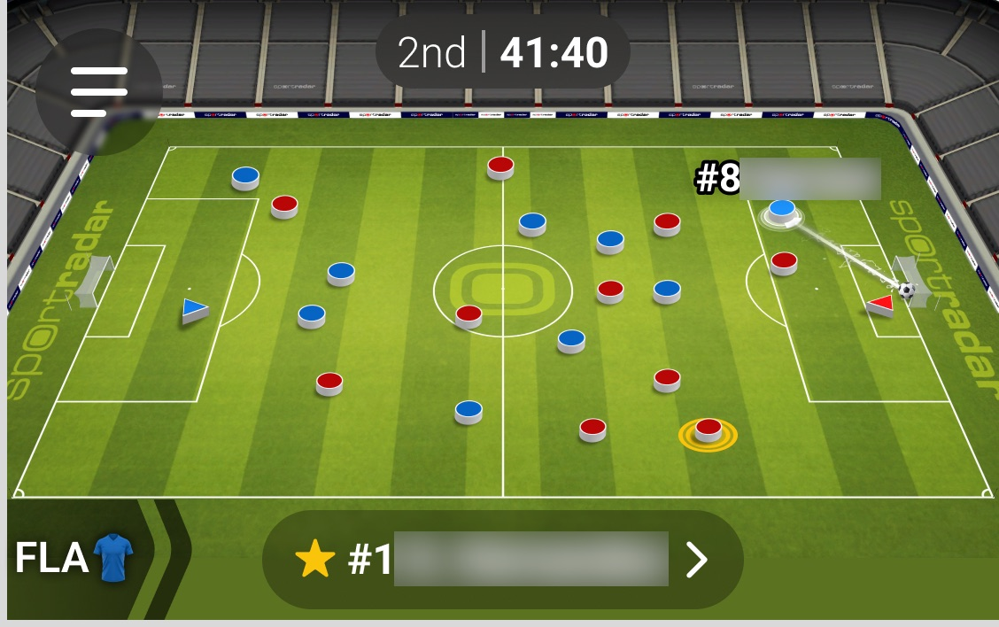
-
03
Make the ball easy to find
Tilted, players overlap and it's hard to see who has the ball. So the player on the ball gets bigger.
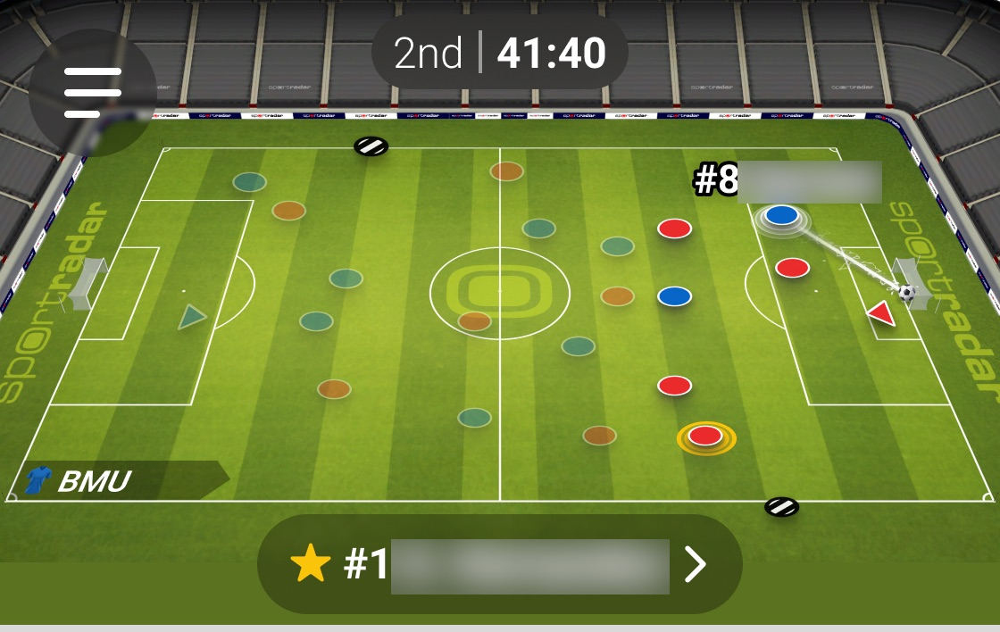
Before 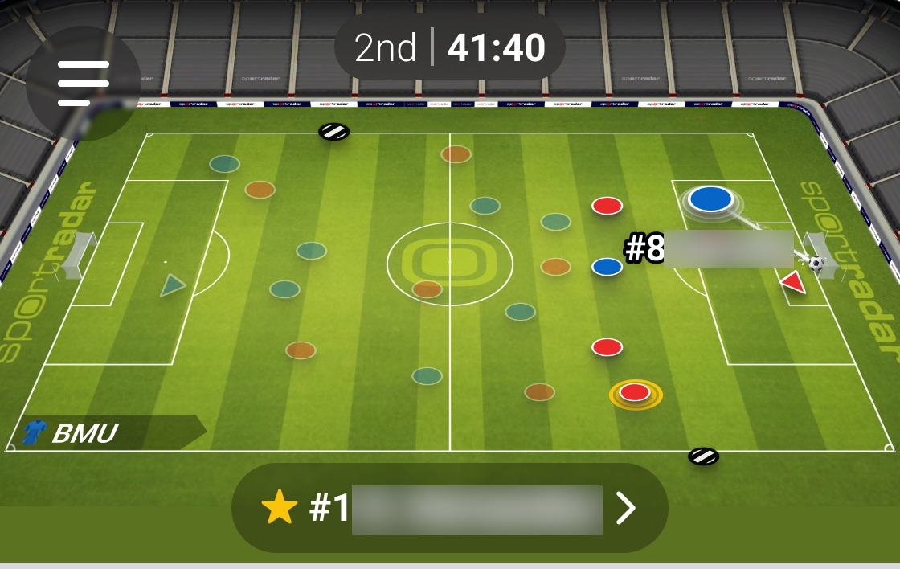
After -
04
Shirts instead of dots, at every size
Shirts in team colours make the teams easy to tell apart. I checked them at three widths, from a small widget to a big one.
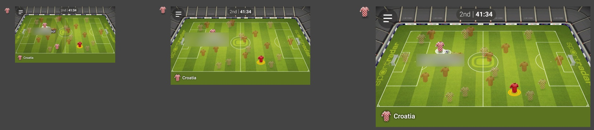
-
05
Draw every moment
Goals, corners, free kicks, cards, substitutions, VAR, injuries. Each one drawn frame by frame, so developers know exactly what happens on the pitch.
What I learnedTilting the pitch was the easy part. The real work was keeping it readable: who has the ball, which team is which, on a screen the size of your palm.
What these three have in common
Live sports are busy. My job is to add information without adding noise.
I build my designs into the real product, because motion and timing don't show up in a static mockup.
Most of my best decisions were taking something away.
Other projects

Let's bring your
vision to life.
I'm here to help you create something exceptional — together.